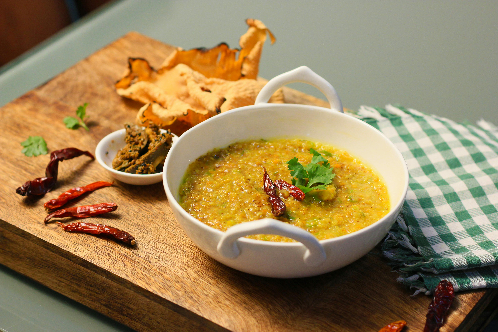

KHICRI(khicuri)

Khichri (or Khichdi) is a popular dish in many South Asian
countries, especially in India, Bangladesh, and Pakistan. It's made from
rice and lentils, typically cooked together with spices, and often served as comfort food. It's simple,
nutritious, and can be made in various ways depending on regional preferences.
Khichri is the ultimate comfort food — warm, hearty, and soothing for both body and soul. Imagine soft,
fluffy rice blending perfectly with creamy lentils, simmered together in a fragrant bath of turmeric,
cumin, and a hint of ginger. Every spoonful is a burst of flavors: savory, slightly earthy, with just
the right amount of spice. A dollop of ghee adds a rich, golden sheen, making it melt in your mouth.
Paired with tangy yogurt or a spicy pickle, it's like a cozy hug for your taste buds. Whether you enjoy
it on a rainy day or as a simple meal to unwind, Khichri never fails to deliver that warm, comforting
feeling we all crave.
Ingredients:
- 1 cup rice (washed)
- 1/2 cup moong dal (yellow lentils) (washed)
- 1 tablespoon ghee (or oil)
- 1 teaspoon cumin seeds
- 1/2 teaspoon mustard seeds (optional)
- 1-inch piece of ginger (grated or chopped)
- 1-2 green chilies (slit or chopped, optional)
- 1/2 teaspoon ground coriander (optional)
- Salt to taste
- 4 cups water (or more for a softer consistency)
- 1 tablespoon lemon juice (optional, for tanginess)
- 1/2 teaspoon garam masala (optional)
- Fresh cilantro (chopped, for garnish)
Optional Vegetables:
- 1/2 cup chopped carrots
- 1/2 cup peas
- 1/2 cup potatoes (chopped)
Steps to Make Khichri:
- Prepare Ingredients:
- Rinse the rice and moong dal in water until the water runs clear.
- If you're using vegetables, chop them into small pieces.
- Cook Spices:
- In a large pot or pressure cooker, heat the ghee (or oil) on medium heat.
- Add cumin seeds and mustard seeds. Let them splutter for a few seconds.
- Add grated ginger and green chilies. Stir for 30 seconds until fragrant.
- Add Vegetables (Optional):
- If you're using vegetables like carrots, peas, and potatoes, add them now. Stir-fry them for a couple of minutes.
- Cook Rice and Dal:
- Add the washed rice and moong dal to the pot. Stir them for a minute to mix with the spices and vegetables.
- Add turmeric powder, ground coriander, and salt to taste. Stir to coat the rice and dal with the spices.
- Add Water:
- Pour in 4 cups of water. Stir everything together.
- If using a pressure cooker, cover and cook for about 2-3 whistles (around 10 minutes on medium heat). For a regular pot, bring it to a boil, then reduce the heat and simmer covered for about 20-25 minutes until the rice and dal are fully cooked and soft. Add more water if needed for a softer consistency.
- Final Touches:
- Once the Khichri is cooked, check the seasoning and adjust the salt. You can add more water if you prefer a soupy consistency.
- Optionally, add a squeeze of lemon juice for extra flavor and a sprinkle of garam masala.
- Garnish and Serve:
- Garnish with freshly chopped cilantro and serve hot with a side of yogurt, pickle, or papadam for a complete meal.
Odin Recipies